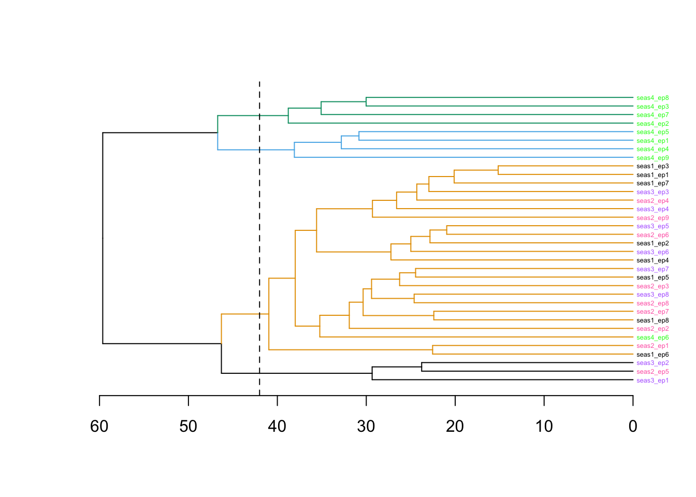

Stranger Things
I want to get better at working with strings, so I’m building on the analysis by @datavizjenn. Much of the work below is taken directly from their post.
The Data
The data this week represent all of the Stranger Things dialogue and comes from 8flix.com - prepped by Dan Fellowes & Jonathan Kitt.
episodes <- read_csv("episodes.csv")
st_all_dialogue <- read_csv("stranger_things_all_dialogue.csv")Creating dialogue to work with
st_dialogue <- st_all_dialogue |>
tidytext::unnest_tokens(word, dialogue) |>
filter(!is.na(word)) |>
anti_join(stop_words, by = "word") |>
count(season, episode, start_time, word) |> # very cool way of getting unique rows
mutate(start_min = lubridate::minute(start_time))Running a sentiment analysis
st_dialogue_s <- st_dialogue |>
inner_join(get_sentiments("bing"), by = "word") |>
group_by(season, episode, start_min, sentiment) |>
summarize(n = sum(n)) |>
ungroup() |>
pivot_wider(names_from = sentiment,
values_from = n,
values_fill = 0) |>
mutate(sentiment = positive - negative)Plotting the sentiment scores
I was able to get the Stranger Things font from this blog which pointed me here.
library(sysfonts)
# Font
sysfonts::font_add_google(name = "Roboto Mono")
showtext::showtext_auto()
family <- "Roboto Mono"
sysfonts::font_add("benguiat", "BenguiatStd-Bold.otf")
showtext::showtext_auto()
# Theme Setup
font_color <- "#F2F2F2"
title_color <- "#FF1515"
bcolor <- "#00090D"st_dialogue_s %>%
ggplot(aes(x = start_min, y = sentiment, fill = sentiment > 0)) +
geom_col() +
facet_grid(season ~ episode, switch = "y") +
scale_x_continuous(position = "top") +
scale_fill_manual(values = c("#F22727", "#0F71F2"), guide = "none") +
labs(x = "Episode",
y = "Season",
title = str_to_upper("Stranger Things"),
subtitle = "Sentiment of the dialogue in each episode by minute.",
caption = "Data: 8flix.com prepped by Dan Fellowes & Jonathan Kitt | Design: Jenn Schilling") +
theme(axis.text = element_blank(),
axis.ticks = element_blank(),
axis.title.y = element_text(#size = 10, angle = 0, vjust = 1, hjust = 0,
color = font_color, family = family)#,
#axis.title.x = element_text(size = 10, hjust = 0,
#color = font_color, family = family)
)Clustering by sentiment
st_dialogue_wide <- st_dialogue_s |>
mutate(minute = paste("min", start_min, sep = "")) |>
pivot_wider(id_cols = season:episode,
names_from = minute,
values_from = sentiment,
values_fill = 0) |>
mutate(show = paste(paste("seas", season, sep = ""), paste("ep", episode, sep = ""), sep = "_"))
st_dialogue_wide <- tibble::column_to_rownames(st_dialogue_wide, var = "show")
COLS <- ggthemes::colorblind_pal()(8)
pal <- c("#000000","#004949","#009292","#ff6db6","#ffb6db",
"#490092","#006ddb","#b66dff","#6db6ff","#b6dbff",
"#920000","#924900","#db6d00","#24ff24","#ffff6d")
# https://jacksonlab.agronomy.wisc.edu/2016/05/23/15-level-colorblind-friendly-palette/
colors <- st_dialogue_wide |>
mutate(episode_color = case_when(
episode == 1 ~ pal[1],
episode == 2 ~ pal[3],
episode == 3 ~ pal[5],
episode == 4 ~ pal[7],
episode == 5 ~ pal[9],
episode == 6 ~ pal[11],
episode == 7 ~ pal[13],
episode == 8 ~ pal[15],
episode == 9 ~ pal[14]
)) |> # pull(episode_color)
mutate(season_color = case_when(
season == 1 ~ pal[1],
season == 2 ~ pal[4],
season == 3 ~ pal[8],
season == 4 ~ pal[14])) |>
pull(season_color)library(dendextend)
st_dend <- st_dialogue_wide |>
select(-season, -episode) |>
dist() |>
hclust(method = "ward.D") |>
as.dendrogram()
dendextend::labels_colors(st_dend) <- colors[order.dendrogram(st_dend)]
st_dend |>
#dendextend::set("labels_col", k = 8) |>
dendextend::set("labels_cex", .4) |>
dendextend::set("branches_k_color", COLS, k = 4) |>
plot(horiz = TRUE)
abline(v = 42, lty = 2)